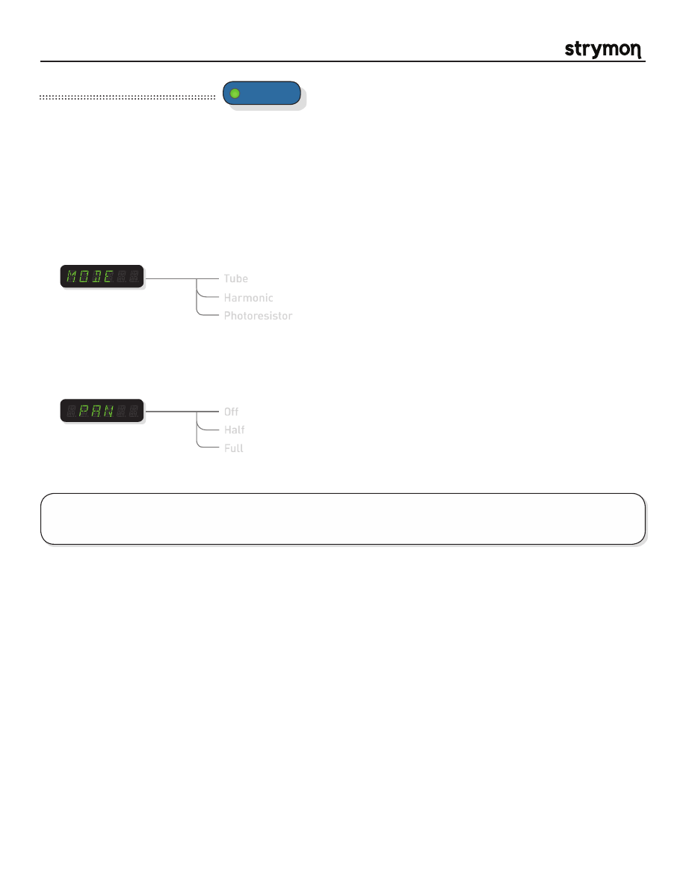

Mobius
-
User Manual
®
pg 15
TYPE
push (bank/BPM)
hold (save)
push (param)
hold (global)
VALUE
PARAM 1
PARAM 2
B
TAP
A
SPEED
DEPTH
LEVEL
BANK DOWN
BANK UP
FILTER
DESTROYER
VIBE
ROTARY
FLANGER
PHASER
CHORUS
FORMANT
AUTOSWELL
VINTAGE TREM
PATTERN TREM
QUADRATURE
®
Mod Machines: Vintage Trem
The Vinage Trem features three classic tremolo sounds from the ‘60s. The distinctly different tremolo circuits in vintage
combo amps of the era resulted in three unique tremolos, each with their own signature sound.
PARAMETERS:
Mode
:
Selects the current tremolo type. The tube tremolo accomplished its tremolo sound
by varying the bias on the output tube circuit. The harmonic trem used band filtering
to achieve tremolo with a unique “phasey” sound. The photoresistor tremolo cut the
amplifier in and out with a bulb/photoresistor combination for the most choppy and
square sounding tremolo of the three.
Tube
Harmonic
Photoresistor
TIPS & TRICKS:
For thick atmospheric trems, choose the HARM mode at slower speeds. For moody sultry trems, try
the TUBE mode. For spy and surf sounds, check out the PHOTO mode at higher speeds.
Pan
:
Determines the offset between the Left and Right channel LFO signals. Listen
to the effect it has on the stereo image as you adjust the parameter. Note: Only
applies when using the unit in Stereo Configuration.
Off
Half
Full